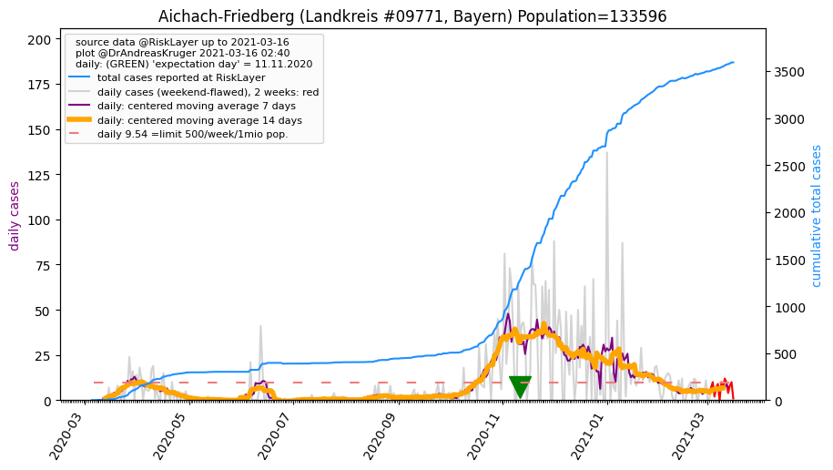
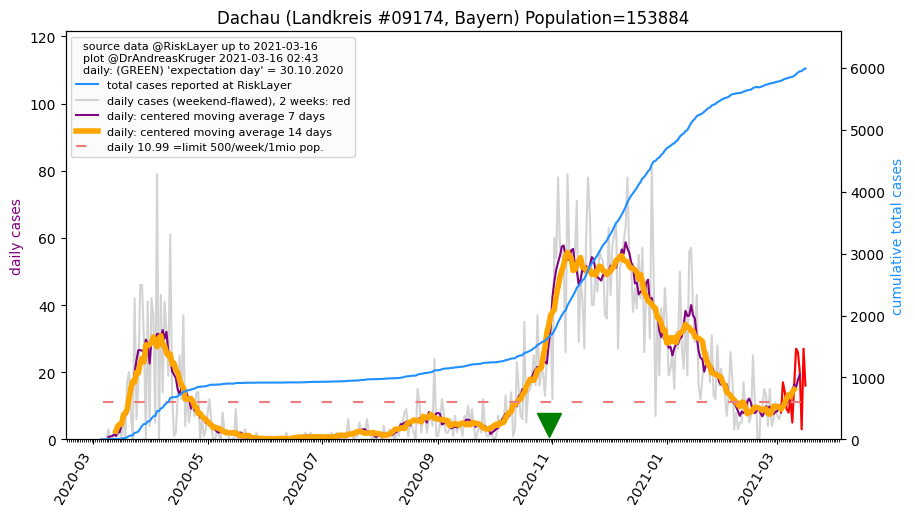
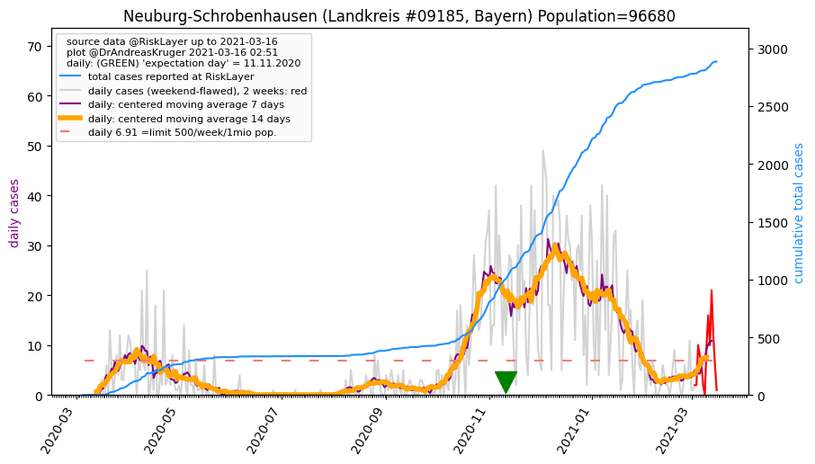
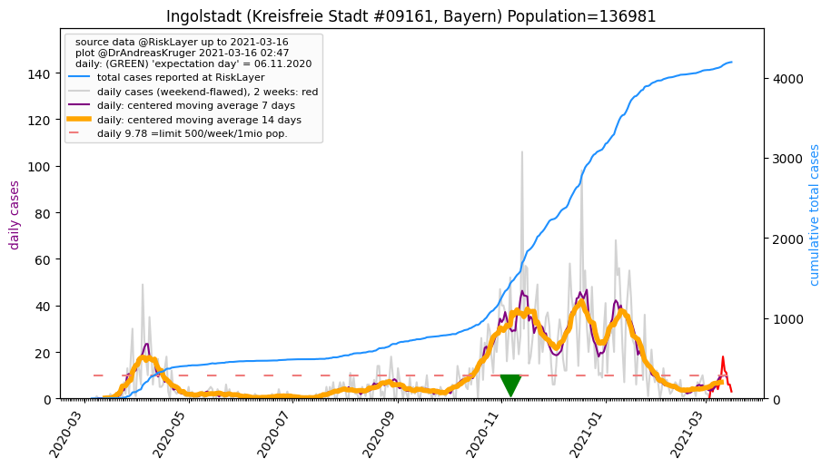
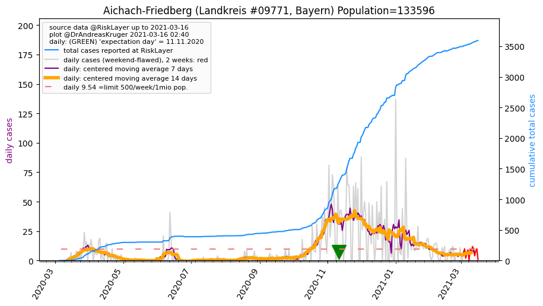
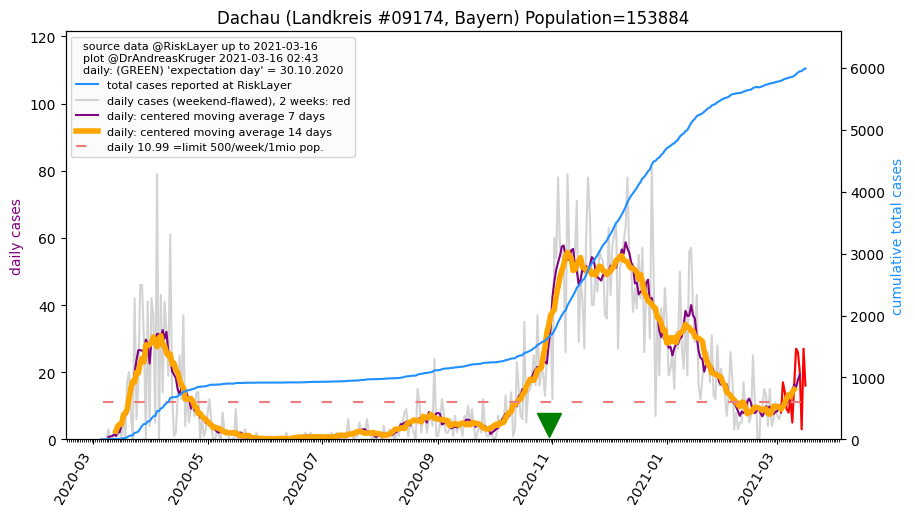
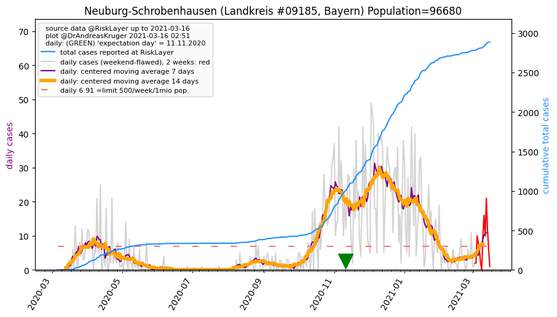
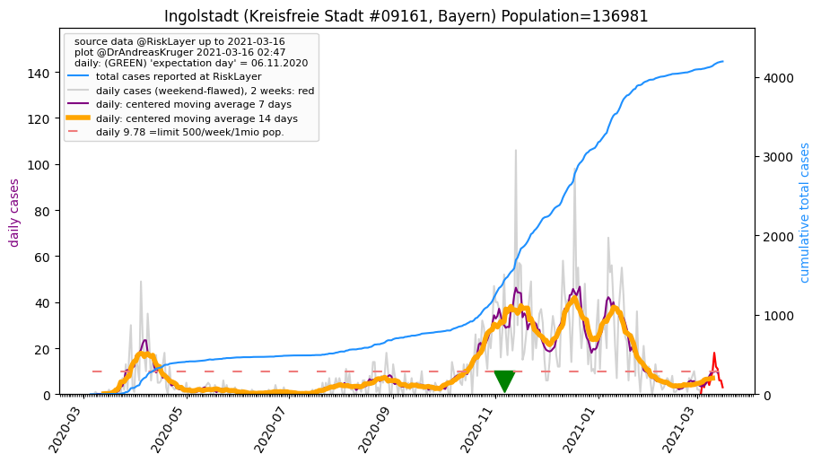

")

")

")
")
")

")
")
")
")
| Aichach-Friedberg_LK (0.0 km)  |
Augsburg_KS (15.4 km) |
Dachau_LK (24.8 km)  |
Augsburg_LK (25.1 km) |
| Neuburg-Schrobenhausen_LK (28.4 km)  |
Fürstenfeldbruck_LK (28.8 km) |
Pfaffenhofen a.d. Ilm_LK (39.6 km) |
Dillingen a.d. Donau_LK (43.1 km) |
| Ingolstadt_KS (44.3 km)  |
Landsberg am Lech_LK (45.5 km) |
München_KS (47.7 km) |
Donau-Ries_LK (49.1 km) |
| Starnberg_LK (49.9 km) |
All plots are regenerated with new data every night. Beware this temporary hotspot is an experimental page - it might get removed, so please do not link to it. Instead link to project http://tiny.cc/cov19de.